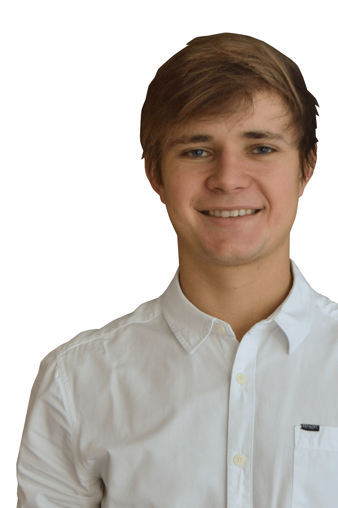
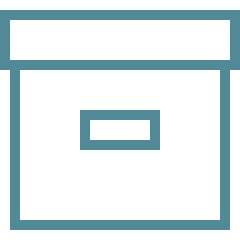
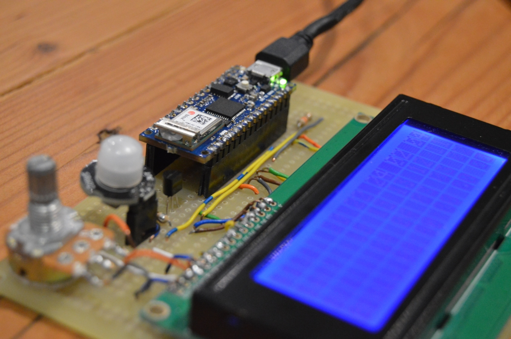
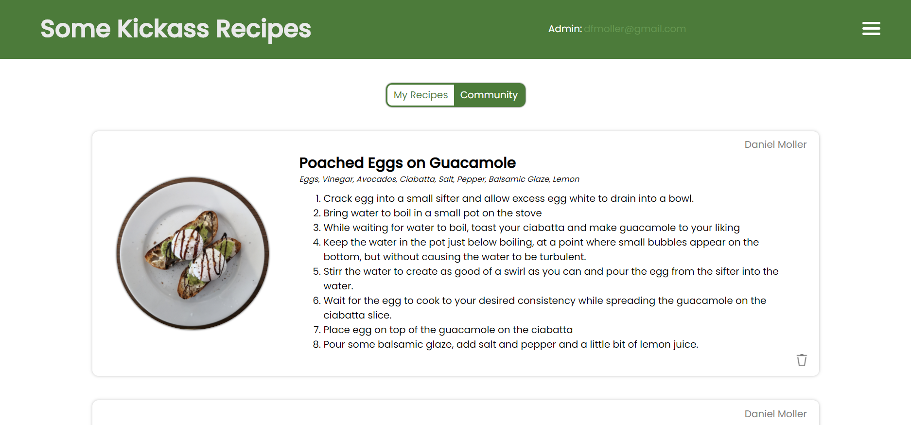

I am a final year Mechatronic
Engineering Student at Stellenbosch University. This degree
takes up most of what I do currently, but I enjoy learning new
things on the side in my own time. On this web page, you will find some of my projects and past work exerience.
About Me

Stellenbosch University
Stellenbosch University is a world renowned university in South Africa. Its Engineering faculty and degrees are also recognised by top universities and institutions globally. For more information, please see SUN Home.

The 'Rooiplein'

PROJECTS
 Building This Responsive Webpage
Building This Responsive Webpage
I built this webpage from scratch to be used as my portfolio. For more information, please have a look at • All Projects •

LCD Weather Module, OpenWeatherMap API
This DIY weather hub is powered by an Arduino Nano 33 IoT, which displays weather information from the OpenWeatherMap API to a 20x4 LCD screen. The arduino fetches the temperature, wind and precipitation at a chosen time interval, for a pre-determined location. Read more at • All Projects •

Some Kickass Recipes
Some Kickass Recipes is a progressive web application that have built. It is a platform that stores and displays recipes uploaded by users.

Stepper Motor, ESP32, Arduino and AWS IoT Core
In this project, I controlled a stepper motor and driver using an ESP32 with the Arduino IDE. The ESP32 received input from its relevant topics on AWS Iot. Depending on these inputs, the microcontroller (ESP32) would either turn the motor to the desired location or publish buck to the topics on AWS Iot. Read more at • All Projects •


PAST WORK EXPERIENCE
25 Jan 2021
until
19 Feb 2021
- Slideluvre -
is a startup IoT company situated in Stellenbosch. They are a
small team of professionals, often employing student interns
and who focus primarily on their one prototype project. The
team is working on an intelligent product that incorporates
solar panals into a louvre system. The louvre slats can rotate
to find a balance between three things depending on the
client's need: tracking the sun for better efficiency,
providing glare control and providing sound insulation.
In my four weeks at Slideluvre, I was firstly given the task
of finding the best sensor to be used in a particular
application. Additionally, I helped with the setup of a
Raspberry Pi to be used with Amazon's Greengrass service.
Finally, I was tasked with building a replacement prototype
circuit board using the ESP32 to control a stepper motor
driver and programming it (Arduino IDE) to communicate through
AWS IoT Core.

9 - 13 DEC 2019
&
6 - 10 JAN 2020
- Yellowtail -
is a software developing company based in Cape Town, but also
part of the larger international Yellowtail group. They
specialise in business analysis, technology consulting, custom
software development and complex integration while their focus
lies with FinTech, Blockchain and retail solutions.
I
started my student work here not knowing much about dev ops,
but wanted to learn by doing. By the end of the two weeks, I
had built most of a Kubernetes Cluster by using a Virtual
Machine on one of their laptops' disc (Commonly known as bare
metal).

STONE THREE
14 - 25 JAN 2019
&
25 - 29 MARCH 2019
- Stone Three -
is an IOT company in Somerset West. They provide solutions
using technology to improve digital productivity, wokplace
safety and healthcare.
I was exposed to a project
using AI in workplace safety and a lot of what I did was
trivial sorting of data, but a big part also included moving
data with Python and SQL.
mid 2019
- Laanhof -
is a luxurious guest house located in the heart of
Stellenbosch. It is really more of a complex containing one
large house and a few seperate apartments that are all listed
on
booking.com
and
lekkeslaap.co.za.
I have been working there every once in a while
as a stand-in manager when the owners were away. This includes
taking bookings online, receiving guests, facilitating the
necessary payments and other admin-related things.
SEPT 2017
- Wild Clover Breweries -
is a beer brewery just outside Stellenbosch. They make their
own wit, pilsner, ale and porter.
I was a waiter at
their brewery for two months around September 2017 in my
Matric year, working weekends I had off.